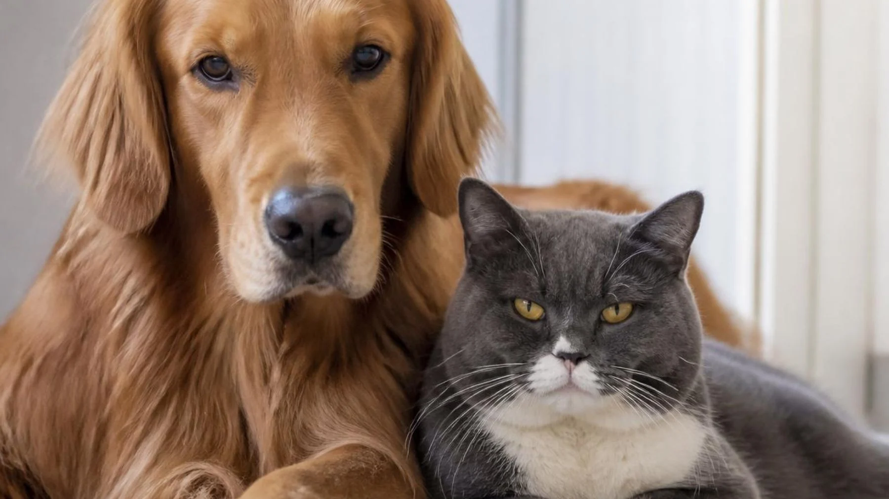

- Pam Johnson-Bennett, experta en conducta felina: “Castigar a tu gato es un error porque no actúan por despecho ni desobedecen aposta; su conducta cumple una función”
- Las adopciones de perros y gatos caen en 2025 y alcanzan el nivel más bajo desde la pandemia
- Ya está en vigor la norma de la Ley de Bienestar Animal: prohíbe a los dueños de perros y gatos que sus mascotas practiquen estas actividades

